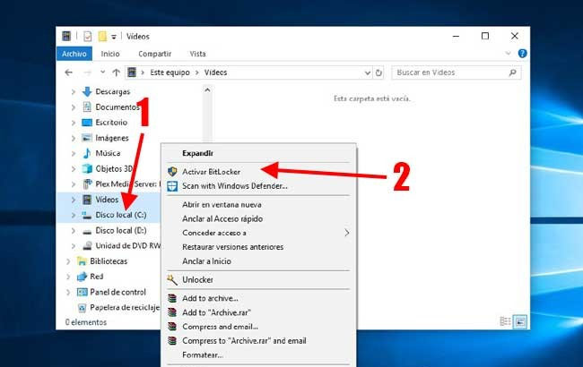
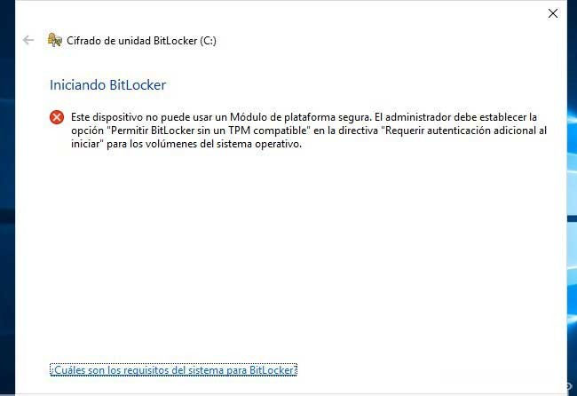
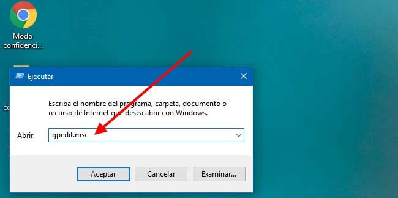
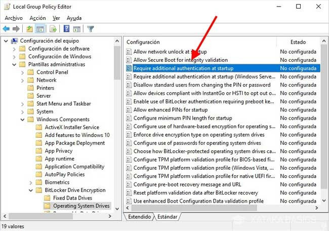
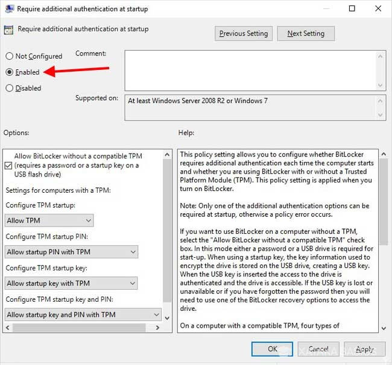
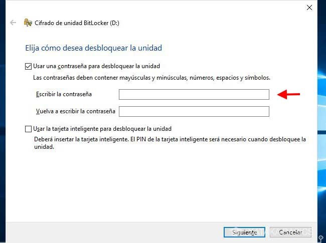
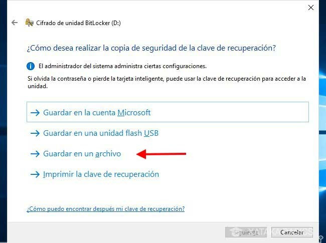
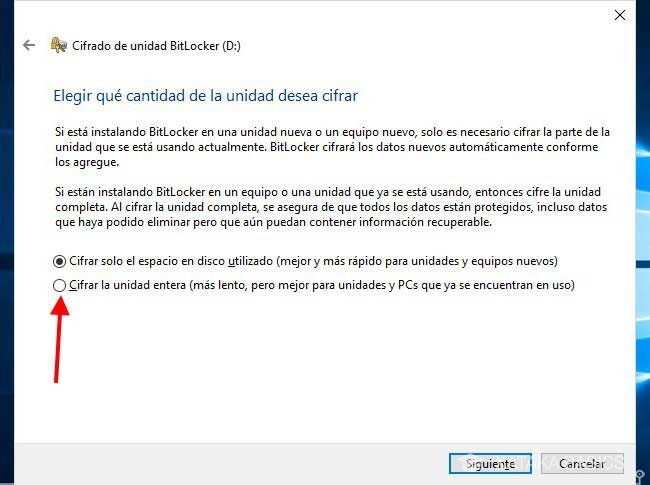
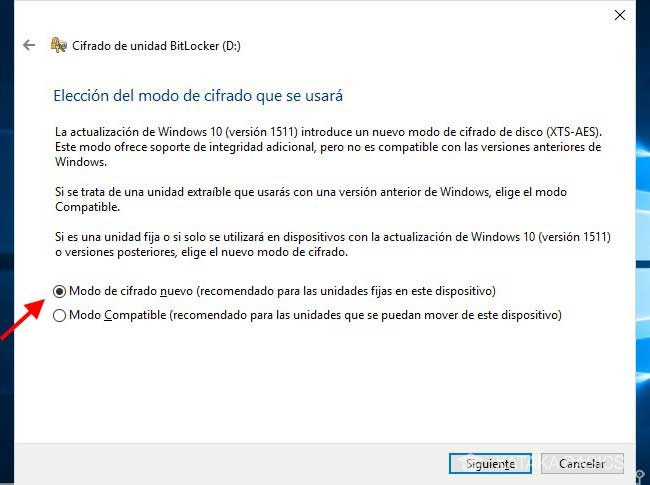
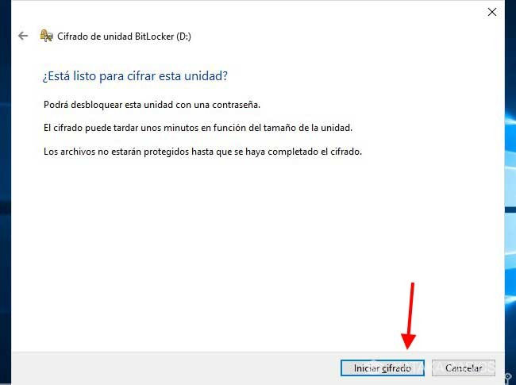

Cifrar un disco duro
Para Empezar este Tutorial
- Comprobaremos si nuestro Windows cumple con los requisitos
- Para esto abrimos el explorador de archivos
- Seleccionamos alguna unidad u le damos clip derecho 
- Y le damos a la opción Activar BitLocker (si esta opción no aparece nuestro Windows no es compatible con esta función)
- si nos aparece un mensaje como que le mostramos a continuación podemos hacer es un paso adicional si no vamos a ítem 3 del tutorial 
- Usa BitLocker sin TPM (si no tienes)
- Para esto abrimos ejecutar con WIN + R en el teclado y escribimos gpedit.msc y luego pulsa Aceptar. 
- Dentro del editor buscamos Configuración del equipo/Plantillas administrativas/Windows Components/BitLocker Drive Encryption/Operating System Drives
- Seleccionamos Require Additional Authentication at startup o Requerir autenticación adicional al iniciar, si te aparece en español. Haz doble clic para editar su valor. 
- En la ventana emergente, marca la opción Enabled (o activado). El resto de opciones predeterminadas son las que necesitas para que funcione BitLocker sin TPM, así que no necesitas cambiar nada más. Pulsa OK. Ahora ya puedes usar BitLocker sin TPM. 
- Cifra tu disco duro
- Aquí debes elegir cómo quieres desbloquear la unidad: si será mediante una contraseña (que debes escribir dos veces) o mediante una tarjeta inteligente que necesitas insertar en el PC. 
- En el siguiente paso tienes todavía más opciones, en este caso para crear una copia de seguridad de la clave de recuperación. La puedes guardar en tu cuenta de Microsoft, en una unidad USB, en un archivo o imprimirla. Una de las opciones más polivalentes es la de guardar como archivo, pero elijas lo que elijas... pon la clave a buen recaudo. 
- En el siguiente paso debes elegir entre si quieres cifrar solo el espacio utilizado o si quieres cifrar la unidad entera. La primera opción es más rápida, pero la segunda es más apropiada cuando estás cifrando un PC que llevas ya tiempo usando. Para mayor seguridad, elige cifrar la unidad entera. 
- La última opción que deberás elegir antes de empezar a cifrar es si quieres usar el cifrado nuevo o el cifrado compatible. El cifrado nuevo no funcionará en versiones más antiguas de Windows, pero teniendo en cuenta que Windows 10 se actualiza "casi" por sí mismo, es relativamente difícil encontrar versiones de Windows anteriores a cuando se cambió el cifrado. 
- Ya está todo listo. Pulsa iniciar cifrado para que comience a cifrarse la unidad. Nosotros hemos cifrado una unidad distinta a la de Windows, por lo que el cifrado empieza inmediatamente y en segundo plano, de modo que puedes seguir usando el PC mientras tanto. Si elegiste cifrar la unidad de Windows, necesitarás reiniciar antes de que comience el cifrado. 
- Soluciones
- Si ya no queremos tener nuestra unidad cifrada solo tenemos que formatearla de igual manera se eliminaran todos los archivos dentro
- Este tutorial esta echo en base de Windows 10 por lo tanto si queremos usarlo en versión anteriores de Windows podría cambiar algunos pasos
×